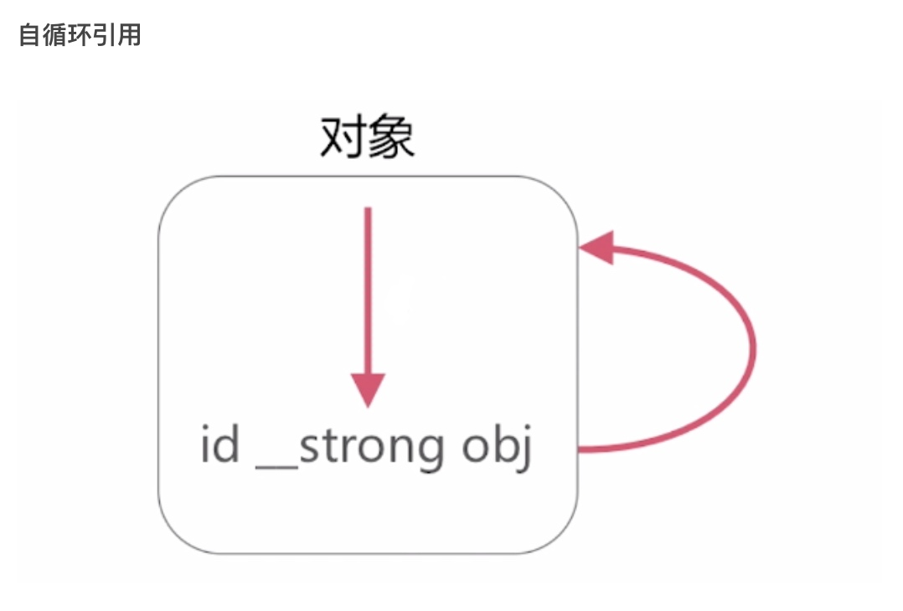
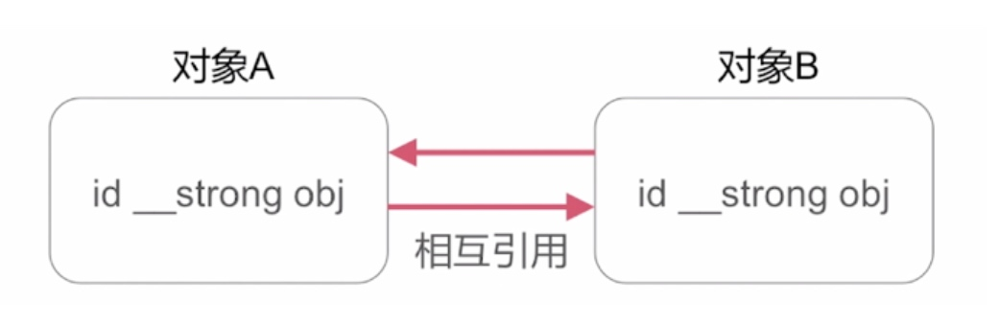
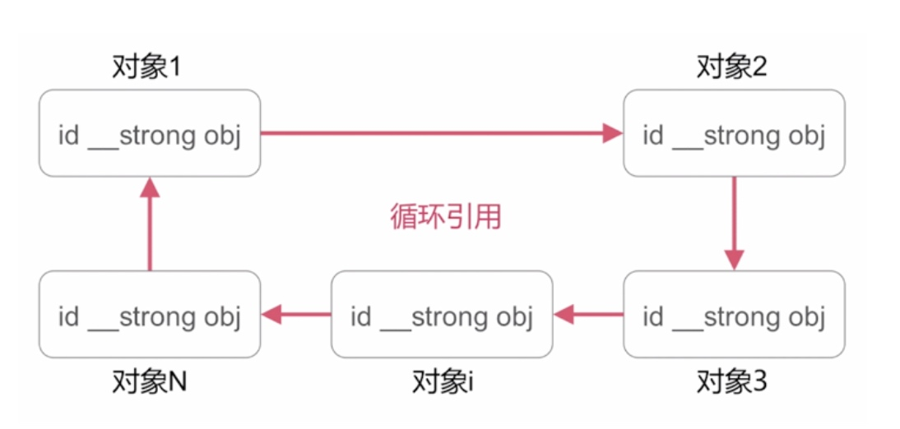
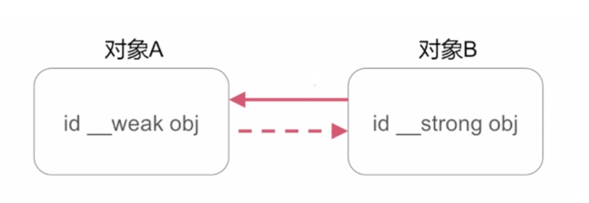
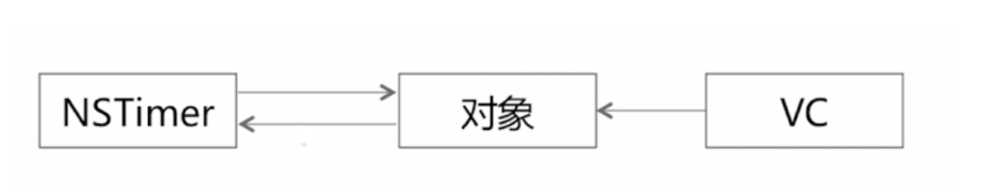
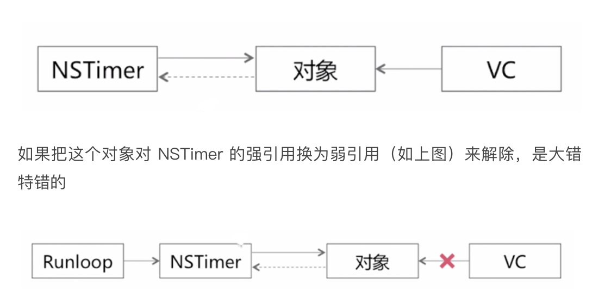
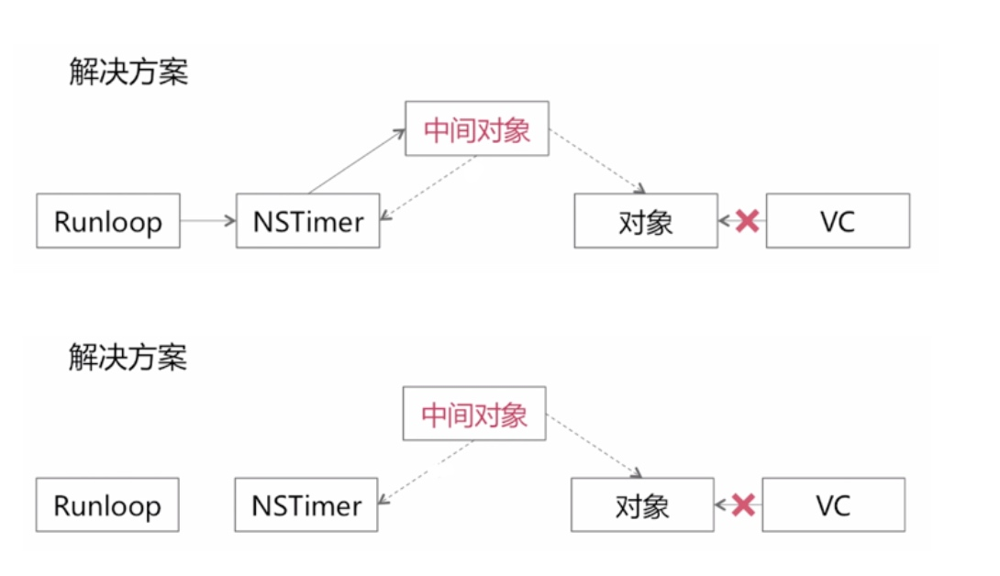

循环引用的介绍
循环引用主要可以分为三种类型
- 自循环引用
- 相互循环引用
- 多循环引用

假如有一个对象，对象当中有一个成员变量 obj，这个对象是强持有他的成员变量，如果此时给这个成员变量 obj 赋值原对象的话，就造成自循环引用
相互循环引用

比如说有一个对象 A ，其中有一个 id 类型的 obj，还有一个对象 B 它当中也有一个 id 类型的 obj，如果此时对象 A 中的 obj 指向对象 B，同时对象 B 中的 obj 指向对象 A，此时就造成相互循坏引用
多循环引用

假如在某一个类当中，有对象 1，对象 2，对象 n，每一个对象当中都一个 id 类型的 obj，假如说此时每一个对象的 obj 都指向下一个对象，就产生了一个多循环引用
循环引用的解决方案
_ _weak破解

假如说左侧的对象 A 和 右侧的对象 B 都有一个成员变量 id 类型的 obj，当把 对象 A 中的成员变量声明为 _ _weak 的时候，就可以破除相互循环引用
对象 B 强持有 A ，而 A 弱引用 B，此时规避了循环引用.
NSTimer的循环引用问题

假如一个实际的场景：比如有一个页面，在这个页面当中有一个 banner 广告栏，需要在每一秒钟滚动一次，一般情况下会把 banner 广告栏的 UI 对象作为 VC 的一个成员变量，由 VC 对它进行强持有，那么由于 banner 需要每个一秒钟进行一个滚动播放，又涉及到定会器的使用，所以需要在这个对象当中去添加一个成员变量 NSTimer，当添加了 NSTimer 之后，在为它分配了一个相应的定时回调事件之后，NSTimer 会对他的 target 进行强引用，这个时候就产生了一个相互循环引用

因为 NSTimer 刚被分派之后，会被当前线程的 RunLoop 强引用，如果说我们这个对象后者说 NSTimer 是在主线程中创建的，那么就由主线程的 RunLoop 持有这个 NSTimer，所以即使这个对象弱引用了 NSTimer，但是由于主线程的 RunLoop 常住内存 通过对 NSTimer 的强引用，再通过 NSTimer 对对象的强引用，仍然对这个对象产生了一个强引用，那么此时，即使 VC 页面退出，对对象的引用去掉的话，这个当前 banner 广告栏由于被 RunLoop 间接的持有，这个对象也不会被释放，此时就产生了内存泄露.

在左侧是 RunLoop 对 NSTimer 的强引用，在右侧是 VC 对 对象的强引用，我们可以在 NSTimer 和对象中间添加一个中间对象，然后由 NSTimer 对中间对象执行一个强引用，同时中间对象分别对 NSTimer 和 banner广告栏的对象做一个弱引用，此时对于一个重复的定时器而言，当当前 VC 或者说页面退出之后，VC 就释放了对 banner 广告栏这个对象强引用，当下次 NSTimer 的回调事件回来的时候，我们可以在中间对象当中 NSTimer 的回调方法里面去判断当前中间对象所持有的弱引用对象是否被废弃掉了，实际上就是判断中间对象所持有的 weak 变量是否为 nil，如果为 nil 的话，在定时器的回调方法当中调用 invalidate 和做 timer 置 nil 的操作，这样的话就可以释放 RunLoop 对 NSTimer 的强引用，NSTimer 对中间对象的强引用，NSTimer和中间对象都可以得到内存的释放达到破除循环引用的目的